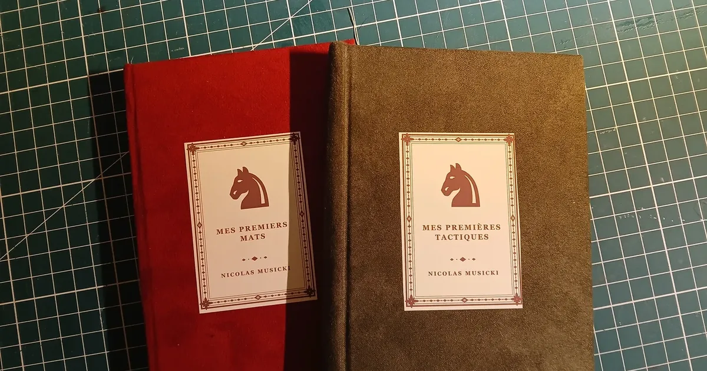
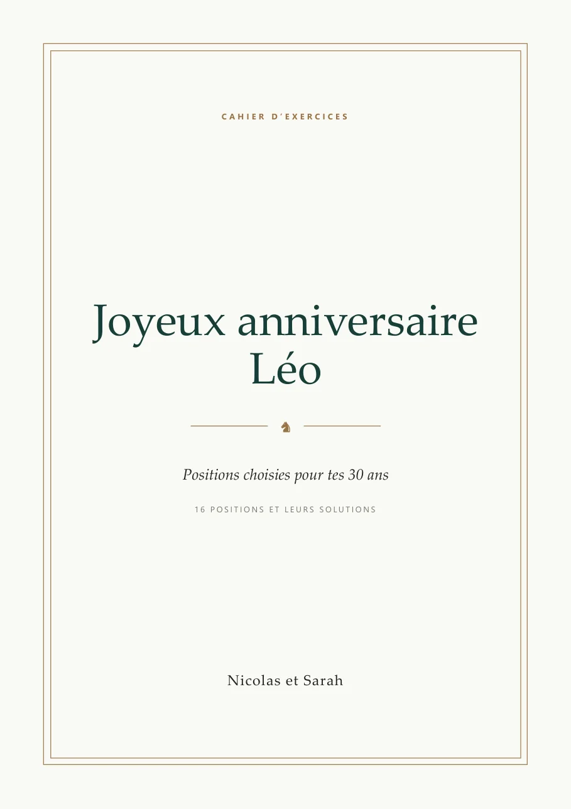

Transparence : je suis Nicolas Musicki, professeur d'échecs et auteur de ce site. Je vends aussi des cours, un livre et deux cahiers d'exercices. Je les cite seulement quand ils correspondent au besoin décrit, et je précise leurs limites. Cet article n'est pas un comparatif indépendant ; il ne contient aucun lien affilié.
Au sommaire
Ce qui compte vraiment pour un enfant qui débute
Avant de choisir, gardez ces quatre critères en tête. Ils valent plus que la marque ou le prix.
- Pouvoir jouer avec quelqu'un. Un échiquier sans partenaire reste dans sa boîte. Le meilleur cadeau est souvent celui qu'on accompagne d'une première partie ensemble.
- Des pièces lisibles. L'enfant doit distinguer le fou du pion et la dame du roi sans hésiter. Les pièces classiques de style Staunton, celles des tournois, sont faites pour ça.
- Un contenu à sa portée. Un livre doit correspondre à son âge et à sa lecture : des diagrammes, des explications courtes, des exercices corrigés.
- Des petites victoires rapides. Un enfant garde l'envie quand il réussit souvent. Mini-jeux, exercices faciles au début, parties courtes : tout ce qui lui permet de dire « j'ai trouvé ! ».
Il découvre, ou il connaît déjà les règles ?
C'est la question qui change tout. Plus encore que son âge, ce qu'il sait déjà détermine le bon cadeau.
| Où en est l'enfant ? | Cadeau adapté | À éviter pour l'instant |
|---|---|---|
| Il n'a jamais joué | Un échiquier simple et un guide d'initiation lu avec un adulte, ou quelques cours | Cahiers d'exercices, pendule |
| Il connaît une partie des règles | Un livre d'initiation complet, des mini-jeux, quelques cours | Livres d'ouvertures |
| Il connaît le déplacement de toutes les pièces | Un cahier d'exercices (mats, tactiques), un club, des cours | Manuels pour joueurs confirmés |
| Il joue des parties complètes et veut progresser | Un club, des cours, des exercices plus variés | Gadgets électroniques coûteux |
Un mot sur l'âge : les enfants n'avancent pas tous au même rythme. Pour un tout-petit, les échecs commencent par manipuler les pièces et jouer à des mini-jeux avec un adulte. Pour un enfant qui lit, un livre ou un cahier devient possible, souvent avec un peu d'aide au début. Mon article apprendre les échecs aux enfants détaille cette progression.
Les bons cadeaux, avec leurs limites
Un premier échiquier
Si l'enfant n'a pas encore de jeu à lui, c'est la base. Voici ce que je regarde :
- Des pièces classiques (Staunton) plutôt que des figurines à thème : il apprendra plus vite à les reconnaître, et il jouera avec les mêmes pièces qu'en club.
- Une taille adaptée à ses mains : des pièces assez grosses pour être saisies facilement, et des cases assez grandes pour que les pièces ne se gênent pas.
- Des coordonnées imprimées autour du plateau (lettres et chiffres) : elles servent dès qu'il lit un livre ou fait des exercices.
- Un modèle pliable ou magnétique si vous voulez l'emporter en voyage : les pièces aimantées tombent moins.
- Limite : un échiquier seul n'apprend pas à jouer. Si personne autour de lui ne connaît les règles, prévoyez un livre, un guide ou un cours avec.
Pour comparer les modèles, voyez mon guide des échiquiers pliables.
Un livre ou un guide d'initiation
Un bon livre d'initiation pour enfant se reconnaît à quelques signes : beaucoup de diagrammes, des chapitres courts, une pièce présentée à la fois et des exercices corrigés. Feuilletez-le si possible : s'il y a plus de texte que de diagrammes, il sera vite abandonné.
- Gratuit : mon guide PDF Apprendre les Échecs, Volume 1 (95 pages) explique les règles pièce par pièce, avec diagrammes et exercices corrigés. Il est écrit pour les débutants complets : un parent peut le lire avec son enfant, sans rien payer.
- À offrir : le livre relié Apprendre les Échecs (200 pages, cousu à la main, 40,00 € envoi compris en France métropolitaine) reprend ce premier volume et ajoute la suite, jusqu'aux finales. Il est pensé pour les débutants ; pour un enfant, il s'utilise avec un adulte. Parcourez le sommaire des 23 chapitres pour voir la progression.
- Limite : mon livre n'est pas un album illustré pour jeune enfant. Pour un tout-petit qui ne lit pas encore, des mini-jeux avec un adulte fonctionnent mieux que n'importe quel livre.
Un cahier d'exercices
Quand l'enfant connaît le déplacement des pièces, résoudre des positions est une excellente façon de s'entraîner, loin des écrans.
- Mes deux cahiers nomades proposent chacun 50 exercices, avec les corrections regroupées à la fin. Mes premiers mats en un coup fait chercher le coup qui termine la partie ; Mes premières tactiques fait gagner du matériel grâce à la fourchette, au clouage ou à l'enfilade. Format poche (10,5 × 15 cm), cousus à la main, 15 € l'unité ou 25 € les deux, envoi compris.
- Pas besoin de connaître la notation : on écrit le nom de sa pièce et ses cases à l'aide des lettres et des chiffres autour de chaque échiquier.
- Limite : ils servent à s'entraîner, pas à apprendre les règles. Ils conviennent dès que les règles sont connues, en général vers 6 ou 7 ans. Avant, commencez par le guide gratuit ou le livre.
Pour essayer avant d'offrir, faites avec lui les exercices gratuits pour débutants du blog. Pour comparer le livre et les cahiers côte à côte, voyez la page Livres.
Un livre avec une page à son prénom

Imaginez la surprise quand l'enfant ouvre son livre et découvre son prénom dès la première page : « Joyeux Noël Emma ». Un livre qui porte son prénom, on le garde.
Sur demande, j'ajoute une page personnalisée au début du livre relié ou d'un cahier d'exercices : le prénom de l'enfant, l'occasion et un petit mot de votre part. Par exemple :
- « Joyeux Noël Emma »
- « Joyeux anniversaire Lucas, pour tes 8 ans »
- « Pour notre futur champion, de la part de Papi et Mamie »
C'est une commande particulière : écrivez-moi avant de commander, avec le texte souhaité et la date à laquelle vous voulez recevoir le livre. Je vous confirme le délai et les conditions avant toute commande.
Quelques cours particuliers
Un cours apporte ce qu'aucun objet ne remplace : quelqu'un qui s'adapte à l'enfant, explique au bon moment et rend les premières parties amusantes.
- Ce que je propose : un bon cadeau à son prénom pour une ou plusieurs séances, à 40 € l'heure en visio ou 50 € l'heure à domicile à Paris et Versailles, avec le matériel fourni à domicile. Le premier cours est offert ; les séances se règlent au fil des cours. Détails sur la page offrir des cours d'échecs.
- Limite : il faut trouver des créneaux, et un enfant qui n'a pas envie ne progressera pas, même avec un bon professeur. Pour un enfant très jeune, je préfère en parler avec vous avant, pour vérifier que le format lui convient.
Pour savoir comment choisir un professeur, lisez mon article sur les cours d'échecs pour enfants à Paris.
Une inscription en club
Beaucoup de clubs ont une école d'échecs pour les jeunes. C'est l'occasion de jouer contre des enfants de son niveau, chaque semaine.
- À vérifier : les horaires, l'âge minimum accepté et l'existence d'un groupe débutant. Les tarifs varient d'un club à l'autre.
- Limite : l'inscription se fait souvent en début de saison. À Noël, un club peut encore accepter des jeunes, mais renseignez-vous avant d'en faire la surprise.
Une application ou une plateforme en ligne
Certains enfants adorent jouer en ligne. Lichess est gratuit et propose un mode enfant dans les réglages du compte ; ChessKid est une plateforme pensée pour les enfants, qui annonce l'absence de messagerie libre.
- Limite : c'est du temps d'écran en plus, et jouer contre des inconnus n'apprend pas forcément les bases. Gardez un œil sur les réglages et la durée. Mon article échecs ou jeux vidéo propose quelques repères.
Quel cadeau selon votre budget ?
Les prix du matériel des autres fabricants varient beaucoup selon les modèles ; ce tableau indique donc seulement les prix de mes propres ouvrages et cours, vérifiés le 22 novembre 2026.
| Budget | Idée | Pour quel enfant ? |
|---|---|---|
| Gratuit | Guide PDF de 95 pages, exercices du blog, une partie avec vous | Débutant complet, avec un adulte |
| 15 € | Un cahier de 50 exercices | Il connaît le déplacement des pièces |
| 25 € | Les deux cahiers (mats et tactiques) | Il aime chercher et résoudre |
| 40,00 € | Le livre relié de 200 pages | Débutant accompagné d'un adulte |
| 60 € | Le livre et les deux cahiers | Débutant qui veut une méthode et de l'entraînement |
| Dès 40 € | Deux séances, dont la première offerte (en visio, ou 50 € à domicile à Paris et Versailles) | Tous niveaux, si un accompagnement lui plaît |
Les ouvrages sont en stock et livrés sous 7 jours maximum après validation du paiement, en France métropolitaine, selon les conditions de vente. Pour une réception à une date précise, contactez-moi avant de commander. Le prix à jour figure sur la page de chaque ouvrage, et la sélection complète sur la page cadeaux d'échecs.
Les erreurs à éviter
- Le jeu à thème illisible : super-héros, animaux, figurines stylisées. Charmant à déballer, mais l'enfant confond les pièces. Gardez-le pour plus tard, comme objet de collection.
- La pendule trop tôt : jouer contre la montre ajoute du stress à un enfant qui cherche encore comment bouge le cavalier.
- Le cahier avant les règles : des exercices trop difficiles découragent. Vérifiez d'abord qu'il connaît le déplacement de toutes les pièces.
- Trop de contenu d'un coup : un gros manuel, une application, un abonnement et un club la même semaine. Un seul cadeau bien accompagné vaut mieux que cinq.
- Offrir et laisser seul : sans personne pour jouer, la boîte retourne au placard.
Comment faire vivre le cadeau
Le jour où il ouvre son paquet, proposez tout de suite une partie, même simplifiée. Les mini-jeux comme la course de pions sont parfaits pour démarrer : ils sont expliqués pas à pas dans mon guide pour initier un enfant aux échecs.
Ensuite, gardez des séances courtes et célébrez ses progrès. S'il perd souvent et se décourage, mon article mon enfant perd toujours aux échecs donne des pistes concrètes. Et si vous vous demandez ce que les échecs peuvent lui apporter, lisez les bienfaits des échecs pour les enfants.
Vous êtes à Paris, à Versailles ou loin d'eux ?
Je propose des cours d'échecs aux enfants, à domicile à Paris et Versailles ou en visio. Le premier cours est offert, y compris quand les séances sont offertes en cadeau.
Préparer un bon cadeauQuestions fréquentes
Quel est le meilleur cadeau d'échecs pour un enfant débutant ?
Pour un enfant qui découvre le jeu, un échiquier simple aux pièces classiques de style Staunton, accompagné d'un guide d'initiation lu avec un adulte. S'il connaît déjà le déplacement des pièces, un cahier d'exercices, quelques cours ou un club l'aideront à progresser.
À partir de quel âge offrir un cahier d'exercices d'échecs ?
Dès que l'enfant connaît les règles, en général vers 6 ou 7 ans. Un cahier sert à s'entraîner, pas à apprendre le déplacement des pièces : avant, commencez par un guide d'initiation ou des mini-jeux avec un adulte.
Faut-il un échiquier en bois pour un enfant ?
Non. Le plus important est que les pièces soient classiques et faciles à reconnaître, assez grosses pour ses mains, et que le plateau porte les coordonnées. Un modèle pliable ou magnétique convient très bien pour commencer et pour voyager.
Peut-on offrir des cours d'échecs à un enfant ?
Oui. Je prépare un bon cadeau à son prénom pour une ou plusieurs séances, à 40 € l'heure en visio ou 50 € à domicile à Paris et Versailles. Le premier cours est offert et les séances se règlent au fil des cours, sans paiement à l'avance.
Une pendule d'échecs est-elle utile pour un enfant débutant ?
Pas au début. Jouer contre la montre ajoute du stress à un enfant qui apprend encore les règles. La pendule devient utile quand il joue des parties complètes avec plaisir, par exemple en club.